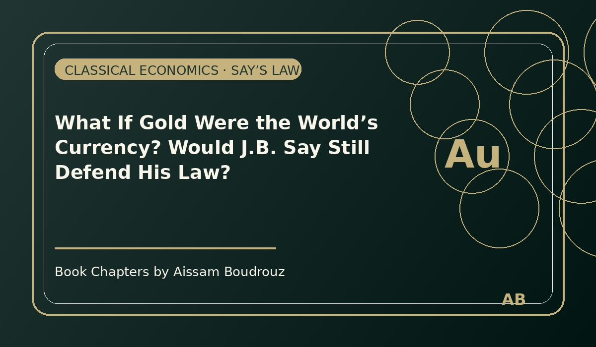

What If Gold Were the World’s Currency? Would J.B. Say Still Defend His Law?
It started with a simple question that popped into my head while I was rereading some old economic notes:
“If gold were still the world’s money, would Jean-Baptiste Say have dared to write his famous law?”
It’s funny how one question can open an entire window into the logic — and limits — of classical economics.
We all know Say’s Law, the elegant line that has survived for more than two centuries:
“Every supply creates its own demand.”
But behind that phrase lies a world of assumptions — and a few fragile hopes about how humans behave with money.
Page 1 – A law of perfect balance
Say’s idea was simple: every act of production generates the income needed to buy what’s produced.
When a company makes goods, it pays wages to workers and profits to owners.
Workers spend those wages on consumption; owners invest their profits in new ventures.
In this way, the system balances itself.
Supply creates its own demand, and crises — at least in theory — should never happen.
A perfect circle.
But perfection, as always, only exists on paper.
Page 2 – When people stop spending
Now imagine that a worker keeps his paycheck instead of spending it, or that a business owner decides to hold on to profits rather than invest.
The wheel stops turning.
Money stays still.
Say was aware of this risk, which is why his law depends on two delicate assumptions.
Page 3 – The two fragile assumptions
First, money must be neutral — used only as a tool for exchange, not as something to store or speculate with.
Second, savings must equal investment. In classical thinking, anything saved automatically becomes invested somewhere else — mathematically expressed as S = I.
If both assumptions hold, the engine runs smoothly.
But real life, as usual, has other plans.
Page 4 – And what if money were gold?
So let’s go back to the original question.
If the world still used gold as its currency, would Say’s Law hold?
I doubt it.
Because gold is never neutral.
It’s not just a unit of account; it’s a symbol of fear and safety.
When uncertainty rises — during wars, crises, or pandemics — people don’t spend gold, they hide it.
And the moment people hide their money instead of using it, Say’s perfect circle breaks.
Production no longer guarantees demand; the economy stops breathing.
Page 5 – The human factor
That’s the hidden truth behind so many economic theories: they depend on trust, not just logic.
They assume that humans will keep spending, investing, and believing in the system.
But history — and human nature — say otherwise.
When people are afraid, they keep what shines.
They lock away their gold, and with it, the rhythm of the economy fades.
So yes, if gold were still the world’s currency, I doubt Jean-Baptiste Say would have announced his famous law.
Because gold may glitter,
but it doesn’t circulate —
and an economy that doesn’t circulate, doesn’t live. ✨